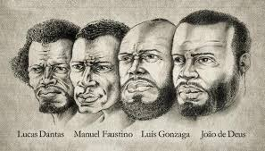

Responsáveis pela conjuração baiana
João de Deus do Nascimento
Manuel Faustino dos Santos Lira
Luís Gonzaga das Virgens
Lucas Dantas

Qual foi o principal objetivo da Conjuração Baiana?
A Conjuração Baiana ou Revolta dos Alfaiates aconteceu em Salvador, na Bahia, em 1798, e tinha como objetivos principais o rompimento com Portugal e a abolição da escravidão.
Mortes e punições
Maria I, os conjurados foram punidos severamente. João de Deus Nascimento, Manuel Faustino dos Santos, Lucas Dantas e Luís Gonzaga das Virgens foram enforcados e esquartejados. Os outros condenados permaneceram presos ou foram degredados. Os delatores receberam prêmio por sua lealdade à Coroa portuguesa.
Resumo
A Conjuração Baiana ou Revolta dos Alfaiates foi um movimento político popular ocorrido em Salvador, Bahia, em 1798.
Tinha como objetivos separar a Bahia de Portugal, abolir a escravatura e atender às reivindicações das camadas pobres da população.
É também conhecida como "Conspiração dos Búzios" ou "Revolta dos Alfaiates", por ter como principais líderes os alfaiates João de Deus e Manuel Faustino dos Santos Lira.
A Conjuração Baiana foi composta, em sua maioria, por escravizados, negros livres, brancos pobres e mestiços, que exerciam as mais diferentes profissões, como sapateiros, pedreiros, soldados, etc.
Influenciada pela Revolução Francesa e pela Revolução Haitiana, a Conjuração Baiana foi fortemente reprimida. Seus membros foram presos e, em 1799, os líderes do movimento foram condenados à morte ou ao degredo.
video explicativo